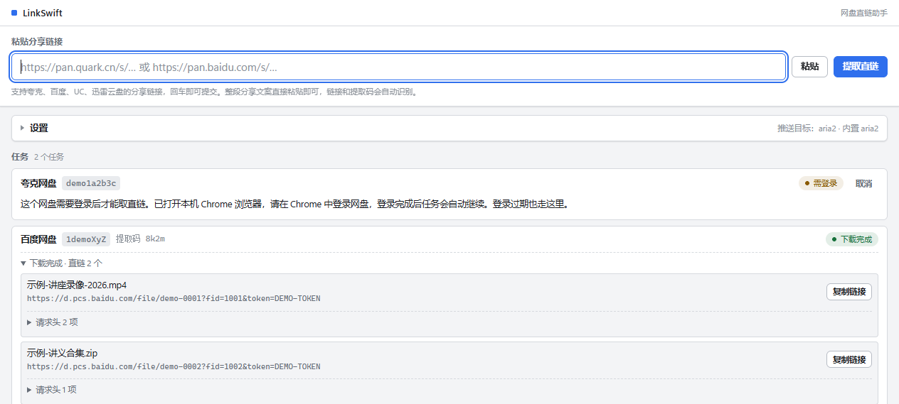

把任务放回主位置
当前是顶部大输入区、可展开设置、纵向任务卡。设置展开后会挤占任务空间。改为固定工具栏、独立设置页，主区域始终用来查看任务。
以 Gopeed 当前主分支的桌面布局与官方概念图为参考，重排 LinkSwift 的任务、网盘解析和设置。先重构界面，再用原来的下载链路验收。
UC 网盘与迅雷云盘入口保留「实验性」标记。本页设置只用于展示，不保存到真实应用。

window.linkswift，是这次改版更合适的起点。当前是顶部大输入区、可展开设置、纵向任务卡。设置展开后会挤占任务空间。改为固定工具栏、独立设置页，主区域始终用来查看任务。
文件名、网盘来源、进度、速度和操作固定对齐。错误原因与下载明细按需展开。预计更容易比较多条任务，实际容量需用真实数据验收。
下载中显示暂停，暂停后显示继续，失败显示重试。需登录或验证码时显示具体处理入口。保留解析阶段，不把“拿到链接”误写成“下载完成”。
改 HTML 结构、样式和渲染逻辑，复用现有 preload 与任务协议。能先交付完整视觉变化，回归范围集中。第一轮不引入新前端框架。
界面规模继续增长时更利于组件组织，但本轮额外增加构建与状态迁移工作。现有原生 JS 可以承载这套布局，暂时缺少换框架的必要性。
需要重新设计 Flutter 与 Electron 隐藏网盘窗口之间的连接方式，涉及应用架构。工作范围远超 UI 改版，应作为独立项目评估。
| 当前能力 | 新界面位置 | 接入方式与边界 |
|---|---|---|
| 粘贴分享文案 / 自动提交 | 「新建任务」弹窗；保留快捷粘贴路径 | submit(rawLink)。仍提交原文，不在 UI 重写提取码解析。 |
| 阶段任务 / 实时进度 | 状态侧栏 + 紧凑任务行 + 可展开文件明细 | listJobs / onJobEvent。一条 Job 可有多个文件，显示每个文件进度与操作范围。 |
| 登录 / 验证码 / 人工处理 | 「待处理」筛选 + 原因提示 + 处理按钮 | login / revealWindow / continueAfterLogin。根据原因显示不同按钮，不能只做通用「去登录」。 |
| 暂停 / 继续 / 重试 / 取消 | 任务行右侧；次要操作放入明细 | pause / resume / retry / cancel。由真实 Job 状态控制按钮；取消继续映射 failed + cancelled。 |
| 下载出口 / 目录 / aria2 | 独立设置页；引擎状态放在侧栏底部 | 保留内置与外部 aria2、复制直链、浏览器下载、目录选择、连接测试、重启及自动转存授权。 |
建立图标栏、筛选侧栏、主工作区。统一颜色、字级、间距、进度条与按钮。
src/renderer/index.htmlsrc/renderer/styles.css
900×760 默认窗口与 720×520 最小窗口不遮挡主操作。窄窗口折叠侧栏；键盘焦点可见。
接回现有事件，迁移搜索、筛选、进度明细和任务操作。保留完整任务状态。
src/renderer/renderer.js
覆盖解析、等待处理、已取链、下载、暂停、完成、失败与取消；多文件任务、长文件名和空列表可读。
将设置迁为独立页。保留高级选项与网盘登录说明，按失败原因呈现下一步操作。
继续复用 renderer-preload.js 已有 API。保存后重开设置数值一致；人工处理能唤出正确窗口；自动转存授权不丢失。
逐条验证交互、主题、窗口缩放、真实网盘下载与重启恢复。完成后再替换默认 UI。
运行现有 check:share-link、check:job、check:aria2、check:lifecycle 与 probe:ui；夸克 / 百度真实下载核对文件落盘结果。
window.linkswift首轮以 renderer 三个文件为主。只有真实接入暴露接口缺口时，才单独评估协议变更。窗口默认尺寸可继续沿用 900×760。
① 已拿到直链、已投递和真实下载完成必须分开显示；复制或浏览器下载不能伪造本地下载进度。
② 网盘名、文件名、分享文案和错误信息继续用 textContent 写入。保留每个文件的复制直链等现有操作。
③ UC / 迅雷在当前驱动中标记为实验性；本轮不把存在入口当作稳定性证明，也不增加 Gopeed 的 BT、扩展商店等能力。
④ 原型暂停、重试和设置均为浏览器本地演示。正式交互需要等待 IPC 结果，处理失败并保持滚动与展开状态。
规划合计 20–30 小时。先完成渲染层迁移，再根据真机回归结果调整工时。